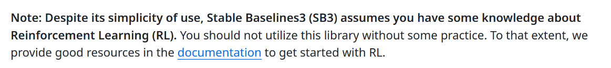
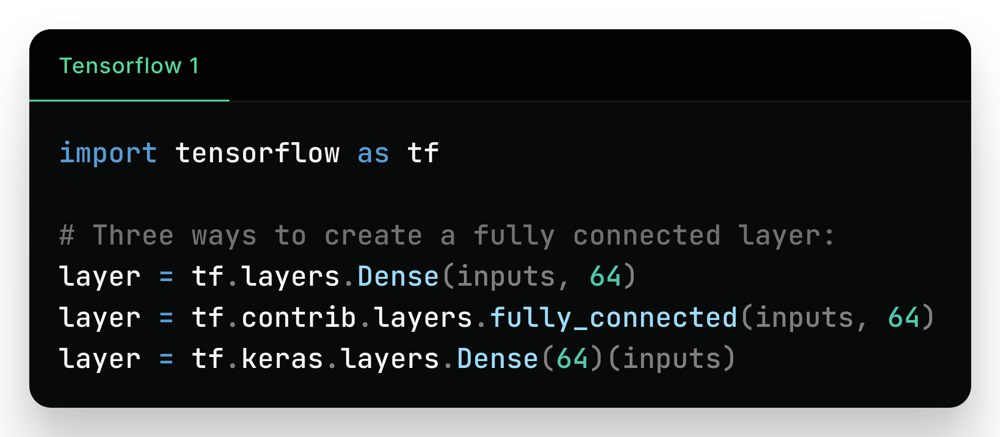
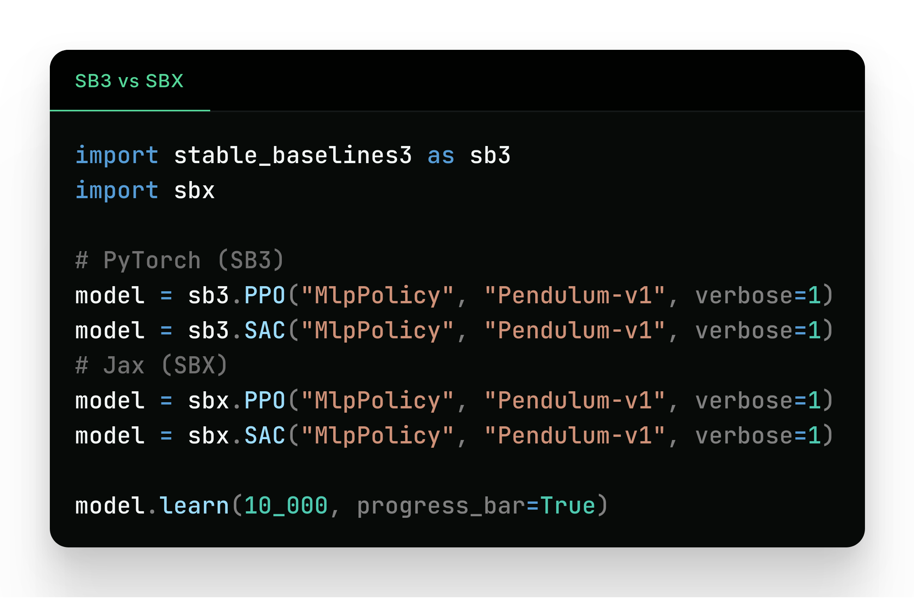
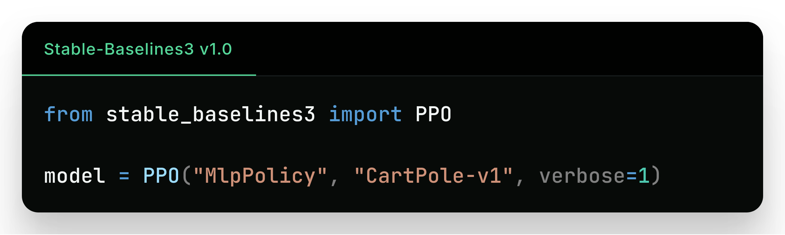

Designing (Robot) Software That Is Easy to Use

Stable-Baselines3 (SB3)
Reliable RL Implementations

https://github.com/DLR-RM/stable-baselines3
Raffin, Antonin, et al. "Stable-baselines3: Reliable reinforcement learning implementations." JMLR (2021)
Motivation
Hardware without software is like an instrument without a musician
Outline
- High Quality Software
- Intuitive Interface
- Modular vs. Minimal Implementations
High Quality Software

- Software best practices (unit tests, mock hardware, typing, ...)
- Separate optional dependencies (ex: ROS)
- Avoid breaking changes, migration guide
- Fully documented
- High Quality Software
- Intuitive Interface
- Modular vs. Minimal Implementations
Intuitive interface?

Consistent interface

❌ Confusing

✅ Consistent
Abstraction level
Flexible while still easy-to-use
Automate repetitive code
❌ Boilerplate code

✅ Automated
- High Quality Software
- Intuitive Interface
- Modular vs. Minimal Implementations
Modular vs Minimal
Modular

Minimal
Modular Implementations
- Easy to combine components
- Reduce code duplication
- High entry cost

Minimal Implementations
- Standalone / minimal dependencies
- Reduce complexity
- Easier to share/reproduce
- Perfect for educational purposes (cleanRL)
- Find bugs
- Hard to maintain
Conclusion
- Tips for creating easy-to-use interfaces
- Design decisions